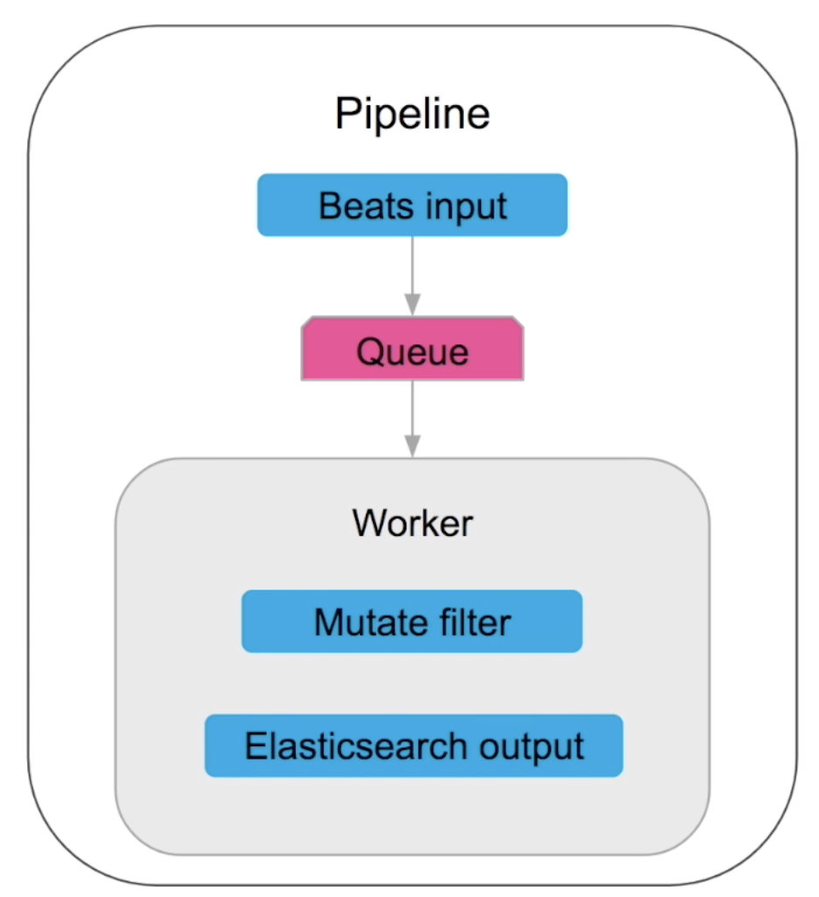
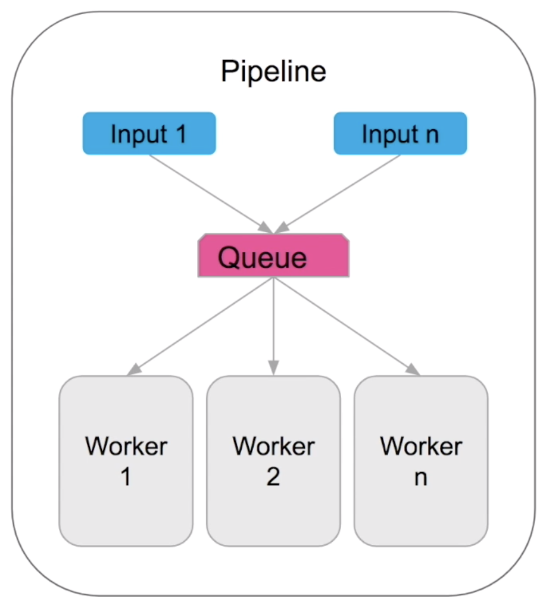
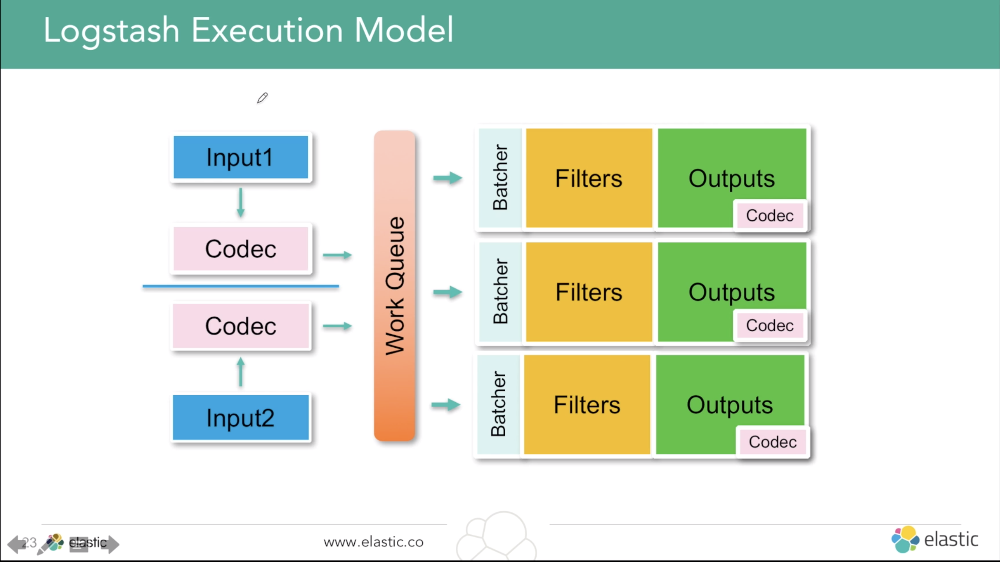
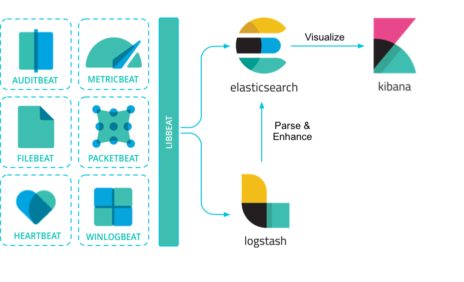

Log 를 이해하고 Logstash 사용하자
- Logstash를 사용할때 왜 log를 이해하는 것이 필요할까?
- Logstash 의 collection(수집)과 centeral aggregation(집중식 취합) 의 강점을 활용하기 위해서
- log 의 특성을 파악해야 로그 메시지 구조에 따라 어떤 데이터를 남겨서(filtering) 다음 분석도구(예. Elastic Search)에 넘길 것인지, 포맷 정규화는 어떻게 할 것인지 등 logstash의 plugin을 적절하게 사용할 수 있음
- 무엇을 logging 할지 제대로 정의되지 않아서 이상한 loggin만 했다면, 아무리 log를 많이 수집해도 원하는 분석을 실행할 수 없음.
- 단, Logstash는 단순히 log만 다루는 것이 아님. Elastic에서는 Logstash를 DataFlow Engine이라고 정의하며, log를 넘어서 Data를 수집,변환,적재하는 확장된 목적으로 사용이 가능.
- log 란?
- log message 는 컴퓨터 시스템, 장치, 소프트웨어 등에서 발생하는 특정한 sitimulation에 대응해 발생함
- Informational 정보 / Debug / Warning / Error / Alert 다섯 가지 분류로 나눌 수 있음
- log message 는 컴퓨터 시스템, 장치, 소프트웨어 등에서 발생하는 특정한 sitimulation에 대응해 발생함
- log message 형태:
- Timestamp(로그 시간) + data(정보) 로 구성되어 있음
- logging의 중요 단계는 아래와 같음
- 질의와 계획(무엇을 언제 logging할 것인가?) → 로그 메시지 생성(log 만들기) → 로그 메시지 필터링과 정규화(low,medium,high) → 로그 메시지 수집 → 로그 분석 → 로그 메시지 장기보관
- Log 분석에서 주의해야하는 점은 아래와 같음 → logstash를 통해 해결
- No common/consistent format → filtering해서 원하는 형태의 데이터로 만들자
- Logs are decentralized → log를 모으자. logstash는 다양한 형태의 input을 모으기 쉬움
- No consistent time format → data filter plugin으로 timestamp를 정규화하고, grok로 date를 뽑아냄
- Data is unstructured → filtering 사용해 원하는 field를 뽑아내고, json plugin 등을 사용해 구조화함
왜 logstash를 사용할까?
log 써먹으려고 - 서버 / 애플리케이션 모니터링(에러 리포트,..)
- 서버에서 바로 log 보면 안될까?
grep "Error"처럼- 단일 서비스 - 단일 서버 : 응답시간 모니터링, 에러 리포트 등 무엇을 분석할지 정의되어있다면 CLI로 log분석 가능함
- 하지만 대다수의 서비스는 분석할 로그가 너무 많아서 어떤 걸 봐야할지 불가능한 상황이 발생. '단일 서비스 - 다수 서버' 혹은 '다수 서비스 - 다수 서버' 로 구성되어있기때문
- 이 말인즉슨, 로그 확인을 위해 여러 서버에 동일 명령을 사용 가능한 ssh 멀티플렉서를 사용한해서 각 개별 호스트에 접속하는 불편함을 줄인다고 하더라도,
- 호스트들에서 발생하는 수천 줄 로그에서 에러찾기, 에러 찾아도 한 서버가 오동작하는지 시스템 전체 문제인지 판별을 하고 호출 체인타고 들어가서 에러 추적하고 원인 찾기를 해야함 - 이건 아닌거 같습니다 쓰앵님 -> 현대 서비스 환경에서는 로그부터 가능한 한 많은 collection(수집)과 ceteral aggregation(집중식 취합)을 하는게 중요 함. 그럼 이렇게 취합한 많은 로그를 어떻게 써먹을까? 위처럼 직접 분석하는 방법은 매우 쓰기 힘들어보임 -> 로그 파일 포맷을 파싱하고 분석을 위한 추가 서비스(e.g. elastic stack)에 전송할 수 있는 파이프라인이 필요함. logstash 처럼
- 서버에서 바로 log 보면 안될까?
다양한 데이터 통합하고 정규화해서 필요한 부분의 데이터를 바로 쏙쏙 뽑아내려고(Filtering / streaming)
- logstash는 log수집뿐만 아니라 다양한 데이터 정리 및 변환이 가능하도록 여러 plugin을 지원.
- 기존에 보유하고 있었던 로그, DB data 뿐만 아니라 데이터 스트림, Http요청 이벤트 변환, HTTP 엔드포인트 폴링으로 이벤트 생성까지 가능함. 이건 나중에 여러 방향으로 확장이 가능.
- 예를 들면, Http요청을 이벤트로 변환해서 twitter 정보를 webservice firehoue(a steady stream of all available data from a source in realtime)활용이 가능해짐 -> 실시간 데이터가 중요한 socialTreand 분석이 유용해짐
결론.
- 그러니까, logstash를 사용해서 여러 형태의 Input을 받아 Filtering을 해서 다른 분석에 활용할 수 있도록 정해진 형식의 output으로 뽑아낼 수 있음, 실시간으로 다른 저장소에 넘기면서 !

- 위 이야기를 멋있게 쓰면 아래와 같음. (elastic 공식 소개), 가이드라인)
Logstash는 실시간 파이프라인 기능을 가진 오픈소스 데이터 수집 엔진(DataFlow Engine)입니다. Logstash는 서로 다른 소스의 데이터를 탄력적으로 통합하고 사용자가 선택한 목적지로 데이터를 정규화할 수 있습니다. 다양한 고급 다운스트림 분석 및 시각화 활용 사례를 위해 모든 데이터를 정리하고 대중화(democratization)합니다. 포맷이나 스키마에 관계 없이, 모든 데이터를 수집하고 강화 및 통합하기 위한 Elastic Stack의 중앙 데이터 플로우 엔진으로 Logstash의 실시간 데이터 처리는 Elasticsearch, Kibana, Beats와 연동될 때 더욱 강력해집니다.
Elastic Webinar - Getting started logstash
- 데이터 흐름을 위한 오픈소스 중앙처리 엔진
- dataflow 파이프라인 구축하여 이벤트 데이터의 변환 및 스트림 설정
- 다양한 데이터 자원 접근
- 원시 버퍼링을 통한 수평적인 스케일링
- 통합 처리를 위한 탄탄한 플러그인 환경
기본 개념 - 6가지

들어가기 전
- 서비스에 '어떤 데이터'가 필요한지 정의하고 여기에 따라 '어떤 플러그인'을 선택하여 데이터를 필터링할 것인가? 를 고민하는게 설계의 핵심임
- Event : logstash의 기본 데이터 단위(primary unit of data), JSON과 유사하게 dl계층과 type 지원함 (arbitrary hierachies and types supported)
Pipeline
- 주의. log data pipeline에서의 pipeline이 아닌 logstash instance에 있는 pipeline을 의미함.
- 데이터 처리를 위한 logstash 설정으로 하나의 logical data flow를 말함. 하나의 logstash instance에 여러 개의 pipeline이 존재할 수 있음

- Input - Queue - Worker로 구성되어있으며, Input plugins,Filter plugins, Output plugins 세 가지 설정을 통해 순차적으로 실행됨
- Input을 통해 data를 받고
- Queue(kind of bufferd data)를 통해
- worker(filer/ output section, scale in-out 단위가 됨)로 넘김.
Pipeline Can Scale
- Conditionals & multiple pipeline + Secure transport with authentication & wire encryption
- Multiple Input & Multiple Worker 
- 하나의 process에서 작동하는 One Logstash, Many Pipeline


Plugin
- 각 단계(Input, Filter, Output)는 여러 플러그인 조합으로 구성하며, Input -> Filter -> Output이 순차적으로 실행됨.
- 예를 들어, Input은 File Plugin으로, Filter는 JSON plugin 그리고 Output에는 ElasticSearch plugin으로 구성한다면, 파일로부터 데이터를 가져와서 ElasticSearch에 저장가능한 JSON형태로 변환한 후 ElasticSearch로 Indexing하게 됨.
- 각 단계를 조합하는 Plugin의 사용법은 비슷비슷해서 사용법의 학습비용은 크지 않음.
- 원하는 plugin도 만들어서 사용할 수 있음. 참고: Elastic - how to write a logstash output plugin
Input
- 데이터가 유입되는 근원지. Input Plugins을 사용해 특정 소스의 이벤트(데이터)를 가져옴.
- logs & Files, Metrics, Wire Data, Web Apps, Data Stores, Data Streams 등의 수집을 지원함. Elastic Reference - input-plugins을 보면 많은 종류의 Input을 가져올 수 있도록 지원함. 사용법은 거의 비슷함.
- Beats와 결합해서 쓰는 것도 가능함

Filter
- log parsing, stricture, transform, 데이터 확장, 태그 추가 등 의 데이터 변형 작업을 함. Filtering 과정은 필수가 아님.
- 자주 쓰이는 Filter plugin 5가지는 아래와 같음
- gork
- 문자열 데이터에서 필요한 데이터를 뽑아내려면 정규표현식으로 원하는 내용만 뽑아내야함. grok은 자주 쓰이는 정규표현식 패턴이 사전정의되어있어 패턴을 골라서 사용하면 됨.
- logstash-patterns-core를 보면 aws, maven, redis 등등의 로그 패턴을 볼 수 있음.
- mutate
- 데이터 필드 단위로 변형할 수 있음. 예를 들면, 필드를 변경하고 합치고(join), 이름을 변경할 수 있음.
- elastic search 에서 indexing된 data를 변경하는 것은 상대적으로 어려움. indexing 전에 필드를 변경해서 넘기는 것이 속도도 빠르고, 불필요한 indexing을 줄이면서 elasticsearch에 전송하는 데이터양도 줄일 수 있음.
- date : String을 Data타입으로 변환함. 날짜를 string타입으로 Elastic Search에서 indexing하면 Query나 Aggreagtion할때 문제가 발생할 수 있기 때문임.
- json : input의 JSON 데이터 구조를 유지
- kv : 위 JSON처럼 Key-value 형태로 구문분석 유지
- Elastic - filter plugins
Output
- 데이터를 전송할 목적지. 가공된 데이터를 '어딘가의 저장소'에 적재함. Elastic Search, RDBMS 처럼 '어딘가'에 저장할 것인지는 Output plugin으로 결정됨.
- Elastic Reference - output-plugins
Codec plugin
데이터 인코딩 & 디코딩. 메세지(들어오는 데이터)를 쉽게 구분하고 전송할 수 있도록 하는 input단계에서는 Deserialization, output 단계에서는 Serialization 위해 사용되는 stream filter.

많이 쓰이는 것으로는 json, msgpack, plain (text), multiline(여러 줄로 이루어진 로그를 하나의 메시지로 다룸)
- Elastic Reference - codec-plugins
Execution Model

- pipeline은 Input(with codec) → Filter → Output(with codec) 세 단계의 plugin작업을 실행하며 순차적으로 동작함.
- Fliter작업은 Work Queue 에서 이루어지므로 Worker 를 늘려주면 빠르게 작업할 수 있음. → logstash Tunning 시에 중요포인트가 됨
- 기본적으로 Logstash 에 Data 를 집어넣을때 Batch형태로 넣으면서(Bulk API를 사용) Batcher가 Fliter에 보내는 형태로 작동함
Queuing and Delivery Guarantees
In Memory Queue(default)
- 매우 빠름
- 모든 데이터를 메모리에 저장함
- 영속성 없음(Not durable)
- 비정상적인 종료(unclean shutdown)이 일어날 경우 Queue로 전송되던 data(in-flight data)를 잃을 수 있음
Persistent Queue (PQ)
- 빠름
- worker에 전달할때까지 받은 데이터를 저장함(Stores received data on disk until delivered)
- 영속성 (durable) : 비정상적인 종료(event of unclean shutdown)시에도 데이터를 잃지 않음
At Least Once Delivery
- 모든 메시지는 딱 한번만 전송됨(delivered). 거의 모든 플러그인이 지원함 (지원되지 않는 플러그인도 있음)
- 멱등(Idempotent, 연산을 여러 번 하더라도 결과가 달라지지 않음) operation
- PQ(Persistent Queue)에서 비정상적인 종료가 되어서 Worker section(filter + output)에서 중복 메시지를 보내더라도 딱 한번만 연산됨
- 어떻게? Elastic blog - Little Logstash Lessons: Handling Duplicates
Dead Letter Queue
- Logstash Lines: Grok debugger, Dead letter queues
Ingest Data
Immediate Insights with Modules (30:40)
Data Transformation
Serialized with Codec (37:48)
Logstash Administration (47:00)
Monitoring
- Monitoring UI
- Pipeline Viewer
- Monitoring API
Pipeline Management
그리고...
- 파이프라인 구성 : 복잡한 코딩 배제하고 먼저 ,파이프라인 구성 후에 첫 이벤트 빨리 구축 -> 주기적으로 수평적인 확장
- Elastic - Logstash performance-troubleshooting
- Elastic - Tuning and Profiling Logstash Performance
Data resiliency
- Dead letter queue with ElasticSearch
활용
logstash monitoring

- logstash가 제대로 구동되고 있는지 상태를 모니터링하는게 중요함. cluster monitoring을 통해 logstash 상태를 실시간 조회하고 과거 성능 분석에 활용할 수 있음.
- 제공하는 API를 사용하거나, X-pack 을 통해 kibana에서 모니터링 가능함.
- 제공하는 정보는 아래와 같음.
- Logstash node info, like pipeline settings, OS info, and JVM info.
- Plugin info, including a list of installed plugins.
- Node stats, like JVM stats, process stats, event-related stats, and pipeline runtime stats.
- Hot threads.
질문
- 단일 server에 Elastic Search와 logstash 둘 다 동작시켜도 괜찮을까?
- 어떤 서비스를 하느냐에 따라 달라짐. 두 시스템이 충분히 동작할만한 RAM 용량을 확보해야하며, 모니터링하면서 적절한 파악해야함. logstash는 beats보다 resouce 를 많이 사용하므로 단일 서버에 설치하는 것을 권장함.
- 참고 : Elastic - Sizing Elasticsearch
- 참고 : Elastic - elasticsearch-in-production
Beats 를 사용해야할까, logstash를 사용해야할까? 차이점은?
- Beats(참고 - Elastic - beats)는 logstash보다 경량화된 데이터를 수집 agent임. 하지만 입/출력 만 있고 filtering이 없음.
- apach weblog처럼 널리 쓰이는 로그를 간편하게 수집만 하고 싶다면 logstash보다 가볍게 사용 할 수 있음. 사용자 정의 beat도 libbeat 라이브러리를 사용하여 쉽게 빌드 할 수 있음.
- 아래 그림처럼 beats에서 수집한 데이터를 logstash로 보내서 필터링한 후에 사용하는 것도 가능함 
- Beats(참고 - Elastic - beats)는 logstash보다 경량화된 데이터를 수집 agent임. 하지만 입/출력 만 있고 filtering이 없음.
Elastic Search의 IngestNode(문서 indexing 전 데이터 전처리하는 역할의 node)가 logstash의 역할을 대신해줄 수 있을까?
- Elastic - Logstash를 사용해야 하나요, Elasticsearch 수집 노드를 사용해야 하나요?
- IngestNode의 경우 단일 pipeline으로 구성되어 좀 더 간단할 수 있으나, 사용목적에 따라 적절하게 선택하세요
- DZone - elasticsearch ingest-node VS logstash performance 비교
- Elasticsearch 5.0 이전에는 색인을 생성하기 전에 문서를 사전 처리하려는 경우 Elasticsearch, 그 다음 유일한 방법은 Logstash를 사용하거나 사전 처리하는 것이었음. Elastic 6.X에 들어오면서 IngestNode가 추가됨
- Elastic - Logstash를 사용해야 하나요, Elasticsearch 수집 노드를 사용해야 하나요?
{kind=link}
UseCase - 실제 필드에서는 어떻게 사용되고 있나?
- kor webinar 40:36
Referece
- 인용은 본문에 링크 달아두었음
- Elastic guide - logstash(Eng) - 2019.02.13 현재, 한글로 번역된 최신 가이드 버전은 5.4임
- Elastic Webinar - Getting started logstas(Kor)
- Elastic Webinar - Getting started logstash
- discuss.elastic - logstash : elastic의 discussion 페이지
- 책 - Learning Elastic Stack 6.0
- 5 Logstash Filter Plugins You Need to Know About
- A Beginner’s Guide to Logstash Grok
기타 개념
- 책 - 실전 LOG 분석과 체계적인 관리 가이드
- [책 - 마이크로서비스 아키텍처 구축: 대용량 시스템의 효율적인 분산 설계 기법 - 8장 모니터링]
- What is a Data Firehose API?